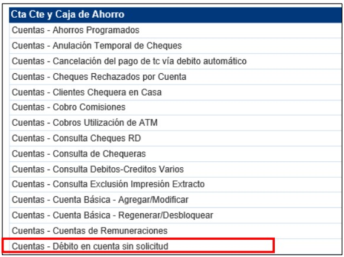
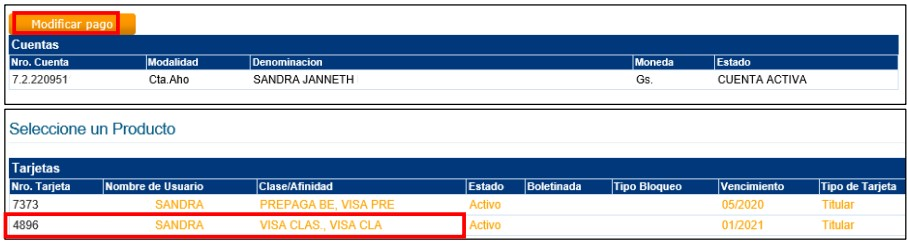
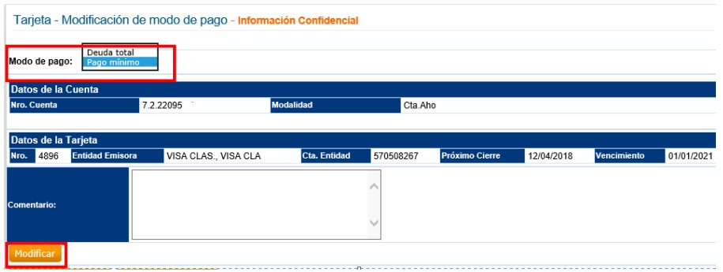

Debito de TC en cuenta - Sin Solicitud
Requisitos:
Indicar al cliente que recién en el próximo cierre se le debitará el PM o DT de la cta. Cte. O caja de ahorro correspondiente.
Pasos a seguir:
- Se ingresa la solicitud de modificación vía SAC.COM en la opción:

- Seleccionar la opción Modificar pago

- Seleccionar el modo de pago que solicite el cliente según lista y completar los campos:
